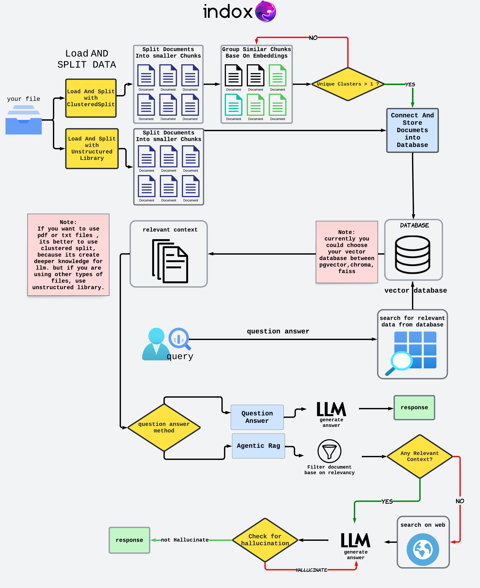

inDox


Official Website • Documentation • Discord
NEW: Subscribe to our mailing list for updates and news!
Indox Retrieval Augmentation is an innovative application designed to streamline information extraction from a wide range of document types, including text files, PDF, HTML, Markdown, and LaTeX. Whether structured or unstructured, Indox provides users with a powerful toolset to efficiently extract relevant data.
Indox Retrieval Augmentation is an innovative application designed to streamline information extraction from a wide range of document types, including text files, PDF, HTML, Markdown, and LaTeX. Whether structured or unstructured, Indox provides users with a powerful toolset to efficiently extract relevant data. One of its key features is the ability to intelligently cluster primary chunks to form more robust groupings, enhancing the quality and relevance of the extracted information. With a focus on adaptability and user-centric design, Indox aims to deliver future-ready functionality with more features planned for upcoming releases. Join us in exploring how Indox can revolutionize your document processing workflow, bringing clarity and organization to your data retrieval needs.
Roadmap
| 🤖 Model Support | Implemented | Description |
|---|---|---|
| Ollama (e.g. Llama3) | ✅ | Local Embedding and LLM Models powered by Ollama |
| HuggingFace | ✅ | Local Embedding and LLM Models powered by HuggingFace |
| Mistral | ✅ | Embedding and LLM Models by Cohere |
| Google (e.g. Gemini) | ✅ | Embedding and Generation Models by Google |
| OpenAI (e.g. GPT4) | ✅ | Embedding and Generation Models by OpenAI |
| Supported Model Via Indox Api | Implemented | Description |
|---|---|---|
| OpenAi | ✅ | Embedding and LLm OpenAi Model From Indox Api |
| Mistral | ✅ | Embedding and LLm Mistral Model From Indox Api |
| Anthropic | ❌ | Embedding and LLm Anthropic Model From Indox Api |
| 📁 Loader and Splitter | Implemented | Description |
|---|---|---|
| Simple PDF | ✅ | Import PDF |
| UnstructuredIO | ✅ | Import Data through Unstructured |
| Clustered Load And Split | ✅ | Load pdf and texts. add a extra clustering layer |
| ✨ RAG Features | Implemented | Description |
|---|---|---|
| Hybrid Search | ❌ | Semantic Search combined with Keyword Search |
| Semantic Caching | ✅ | Results saved and retrieved based on semantic meaning |
| Clustered Prompt | ✅ | Retrieve smaller chunks and do clustering and summarization |
| Agentic Rag | ✅ | Generate more reliabale answer, rank context and web search if needed |
| Advanced Querying | ❌ | Task Delegation Based on LLM Evaluation |
| Reranking | ✅ | Rerank results based on context for improved results |
| Customizable Metadata | ❌ | Free control over Metadata |
| 🆒 Cool Bonus | Implemented | Description |
|---|---|---|
| Docker Support | ❌ | Indox is deployable via Docker |
| Customizable Frontend | ❌ | Indox's frontend is fully-customizable via the frontend |
Examples
| ☑️ Examples | Run in Colab |
|---|---|
| Indox Api (OpenAi) | |
| Mistral (Using Unstructured) | |
| OpenAi (Using Clustered Split) | |
| HuggingFace Models(Mistral) | |
| Ollama |
Indox Workflow

How Indox Works?
- We offer multiple approaches to load and split various data.
- Then the splitted documents store in Database.
- Query is performed on the vector store to retrieve the most relevant information. Actually the retriever searches the vector store for finding relevant text chunks.
- You have two options to obtain your answer.
The main difference between them is that Agentic RAG employs intelligent agents to tackle complex questions that require intricate planning and Multi-step reasoning.Our Agent use has the ability to use multiple tools like searching on webs and check the Hallucination.
Last update: July 15, 2024